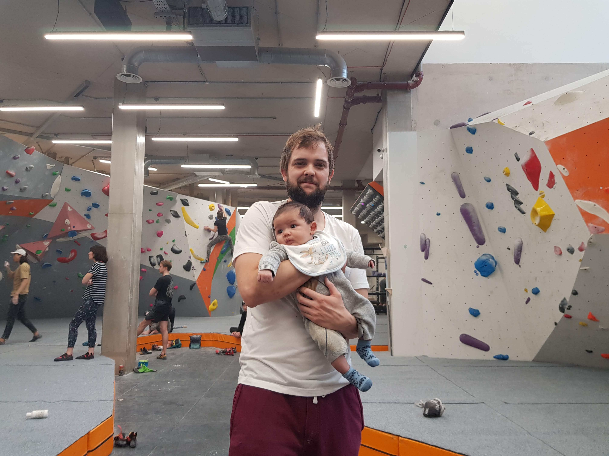
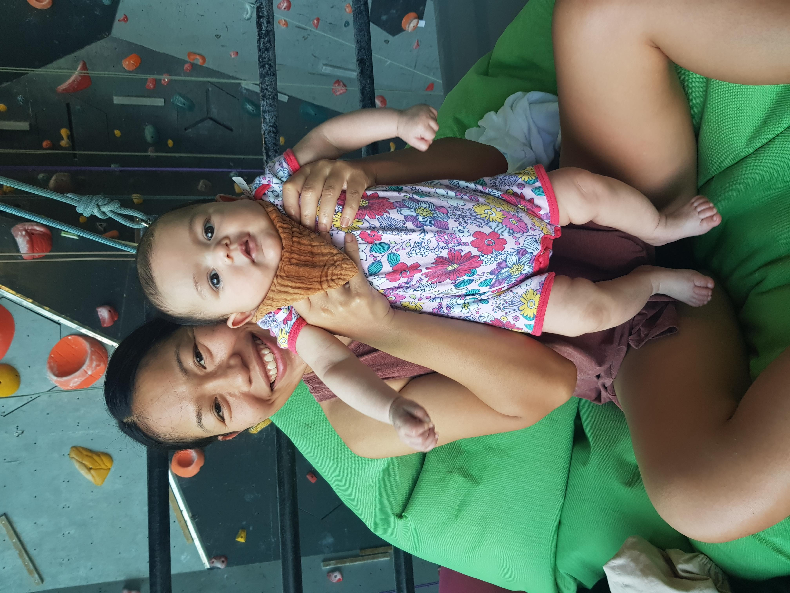

Climbing is a hobby that my partner and I enjoy. we have been climbing for years before I got pregnant. Now, I am a mum of 1 year old boy. After give birth with c-section. I started to climb when my baby was 2 month, most of sites recommemed it's best to wait untill you had 6-8 weeks postnatal check before returning to your pre-pregnancy levels of exercise.
Climbing with with my baby is the best thing! And of couse, I can't do it without my partner.
I started to climb on small grades, V0 - V2 for weeks for gain muscles back and always climb down. For the baby, buggy is essential.
Here are the list of buggy friendly climbing gyms.
Climbimg with toddler, I need to plan around nap times. My 1 year old boy still needs 2 naps during the day. To get a good session, we need to leave home before his first nap that's a MUST and pack evering night before.